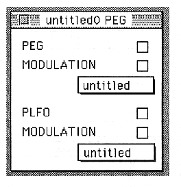

PEG(PEON)
Set PEG ON / OFF.
MODULATION(MWE)
Turns on or off the PEG change by the MODULATION wheel.
PEG pop-up menu
Select the parameter created in the PEG window.
PLFO(PLON)
Set PLFO ON / OFF.
MODULATION(MWL)
Turns on / off the PLFO change by the MODULATION wheel.
PLFO popup menu
Select the parameter created in the PLFO window.